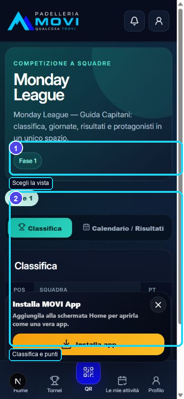
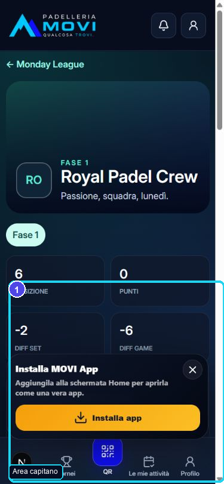
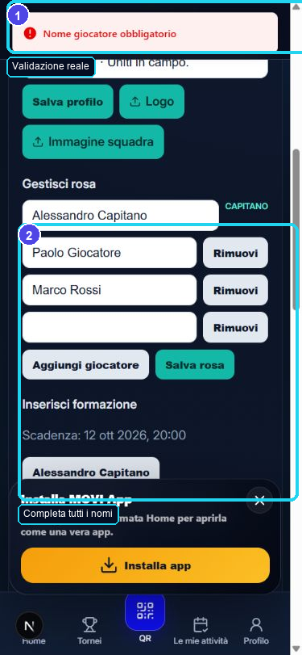
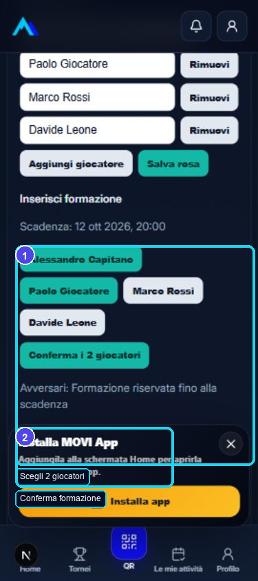
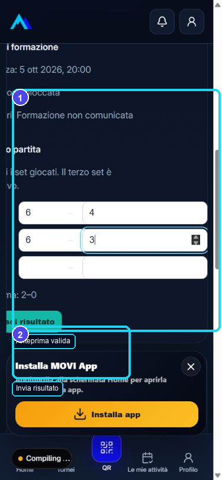
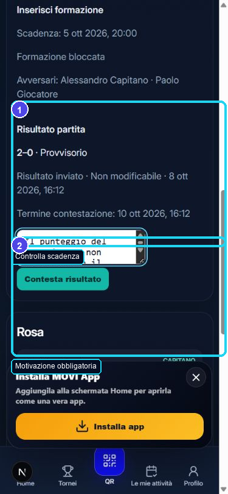
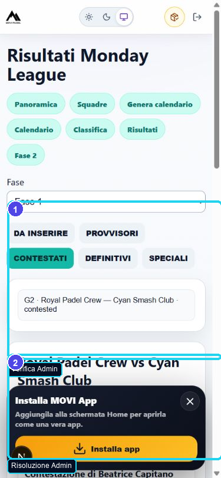
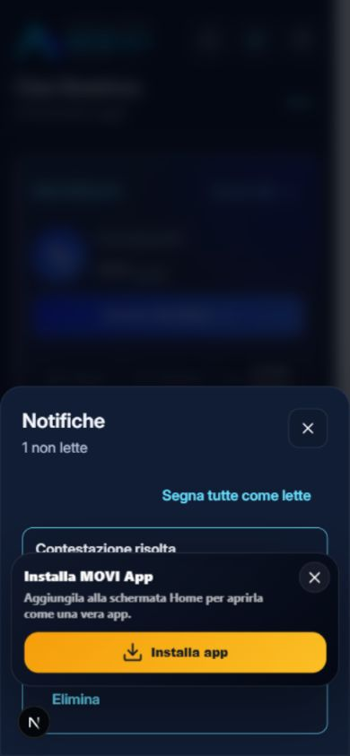

1
Entra nella competizione
Dalla Home apri Monday League. Usa Classifica, Calendario / Risultati e Squadre.
Poi apri la tua squadra.
Un percorso visuale costruito sulle schermate reali dell'app locale: prepara la squadra, invia la formazione, registra il risultato e gestisci una contestazione.

Dalla Home apri Monday League. Usa Classifica, Calendario / Risultati e Squadre.
Poi apri la tua squadra.

Area capitano compare solo al capitano associato alla squadra. Qui trovi profilo, rosa, formazione e risultato.

Prima dell'avvio puoi aggiungere o rimuovere giocatori. Mantieni il capitano e compila ogni nome.
Dopo l'avvio compare “Rosa ufficiale — per modifiche contatta l'organizzazione”.

Seleziona esattamente due persone e tocca Conferma i 2 giocatori.
Scadenza: un'ora prima della partita.

Il capitano di casa compila i set dopo l'inizio. L'anteprima deve essere 2–0 o 2–1.
Dopo l'invio il capitano non può modificare il risultato.

Il capitano ospite inserisce la motivazione e tocca Contesta risultato.
Hai 48 ore dall'invio del risultato.

L'Admin può respingere la contestazione oppure accoglierla e correggere. Il capitano non risolve il caso.

La notifica Contestazione risolta apre la squadra. Il risultato finale compare come Definitivo.
Controlla classifica e storico.